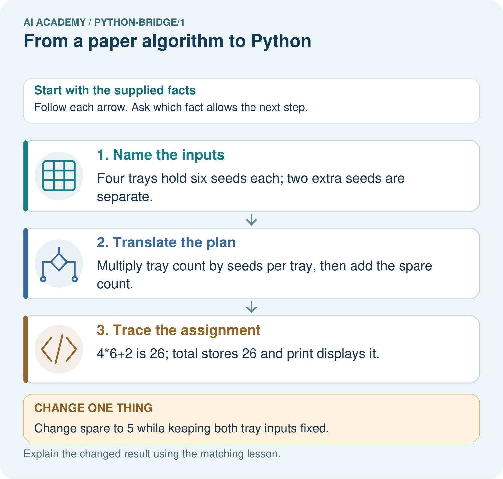

AI Academy · Python readiness bridge · Student lesson
From a paper algorithm to Python
Learn to understand, design, build, test and explain AI systems responsibly.
Project: Python readiness portfolio
Before you start
Four packs contain six counters each. What steps find and show the total?
Plan time to read, investigate and explain. Keep predictions separate from observations.
Student lesson · 1 of 14
Your mission
Your learning target
I can translate a short paper calculation into a Python script.
I can predict and explain the order of executed statements.
I can keep expected and observed output separate when checking a program.
Remember before reading
Close your notes first. A rough first answer helps us choose the right starting point; it is not a score for your ability.
Four packs contain six counters each. What steps find and show the total?
After trying, check the relevant lesson or ask your teacher. Change the part of your explanation that the evidence shows was wrong.
This week you will practise:
Translate a short paper calculation into a Python script
Predict and explain the order of executed statements
Keep expected and observed output separate when checking a program
Retrieve what you already know
Four packs contain six counters each. What steps find and show the total?
This week’s end goal
Trace from a paper algorithm to python and explain the changed program before running it.
Student lesson · 2 of 14
Notice the evidence
In Grade 6 you traced rules on paper. Now you will write a small Python program and check what it actually does. Begin with a counter-packing calculation, not the whole activity adviser. The requirement is to find the total counters in equal packs and display that total. For this first program, the supplied quantities are whole, nonnegative numbers; it does not yet validate typed input.
Use a teacher-prepared Python 3 editor that can run a saved .py file. Open a new file called counters.py, type the code exactly as shown in the next section, save it, and use the editor’s Run command. Read the output area separately from the source editor. No account, AI tool, package installation or personal data is needed. If a device is unavailable, trace on paper and label the result predicted rather than executed.
Student lesson · 3 of 14
See how it works
A calculation from paper to output
packs = 4
per_pack = 6
total = packs * per_pack
print(total)Read the script from top to bottom. The equals sign assigns the value on its right to the name on its left. The star means multiplication. print(total) displays the value of total; it does not display the letters in the name. Type ordinary straight characters and keep the parentheses. The Python prompt symbols >>> are not part of this saved script.
Connect the picture and the explanation
Point to the input, the deciding step and the result in this week’s visual. Explain the same step in ordinary words. A picture helps when you can say what each part represents.
Student lesson · 4 of 14
Compare the cases
Compare a familiar case with a changed case
Make records for 4 packs of 6, then 5 packs of 6. Predict before running. Record actual output, any error and what changed. If working on paper, label both results as traces.
Change one thing in the pictured case
Change: Change spare to 5 while keeping both tray inputs fixed.
Prediction: The printed total becomes 29.
Reason: 4*6 remains 24; adding five gives 29.
Student lesson · 5 of 14
Words that unlock the idea
| Word | Meaning |
|---|---|
| Algorithm | An ordered procedure for solving a stated problem |
| Program | Instructions written in a language a computer can execute |
| Interpreter | Software that executes Python instructions |
| Assignment | Binding a name to the value of an expression |
| Output | Information a program displays or returns |
Student lesson · 6 of 14
Follow a worked example
| After line | Names and values | Displayed output |
|---|---|---|
| packs = 4 | packs is 4 | Nothing yet |
| per_pack = 6 | packs is 4; per_pack is 6 | Nothing yet |
| total = packs * per_pack | total is 24 | Nothing yet |
| print(total) | Values are unchanged | 24 |
Write 24 as the expected output before running. Then copy the actual output into a separate column. A matching result supports this case, not every possible input. A saved file may contain an old edit: save again and rerun the whole script. Do not type the expected number into the output record without running.
Learn from the worked case
Cover the result before checking it. Say what is given, choose the procedure, and follow one step at a time. Then uncover the result and explain your first mismatch. Ask why a step is allowed, not only what number it produces.
A pictorial worked case: From a paper algorithm to Python
Convert a seed-count algorithm. The paper plan counts seeds in identical trays, then adds a labelled spare tray.
The facts we will use
Python 3: trays=4; per_tray=6; spare=2; total=trays*per_tray+spare; print(total). All quantities count seeds.

Read the picture one step at a time
Why this result follows
Python follows the arithmetic instructions. This translation automates a declared counting rule; it does not train a model from examples.
What this example does not establish
The calculation assumes identical tray sizes and measured counts; it cannot detect a miscounted tray.
Student lesson · 7 of 14
Find and repair a mistake
Change only packs to 5. Predict the result from five groups of six, save, then run the entire file again. The expected output is 30. Keep the original four-pack result beside the new one and label the changed input. A comment can explain an instruction: Python ignores text after # outside a string. A comment does not change the calculation.
packs = 5 # five equal packs
per_pack = 6
total = packs * per_pack
print(total)A program can run successfully and still solve the wrong problem. Replacing * with + would display 11 for this input, but addition does not count five groups of six. Use the requirement and a paper calculation to check meaning; the absence of an error message is not proof of correctness.
Locate the earliest unsupported step
Move print(total) to the first line of a fresh script. Predict what happens and why. Put the lines back into an order that meets the requirement.
Student lesson · 8 of 14
Practise together
Write the complete four-line script for 4 packs of 6. Beside each line explain what it does. Which line displays information?
Practise with less help: Predict then observe
Use workbook W2 for the connected example “From a paper algorithm to Python”. First fill the input and rule boxes. Try the middle steps before asking for a hint. After a hint, try the next step yourself.
| Plan | Do | Check |
|---|---|---|
| What is given? Which rule or procedure applies? | Record each intermediate step. | Does the result follow? What remains unknown? |
Explain your trace to a partner. Your partner points to one step to check. Swap roles on the next case. Each person writes their own explanation.
Check your reasoning
Use the worked case for From a paper algorithm to Python. Proposed explanation: “An equals sign displays the answer”. Decide whether this explanation is supported. Point to the step or supplied fact that decides; explain your repair if needed.
Answer on your own before discussion. If you are unsure, say which step you need help with.
Explain the picture
Match each paper quantity to its Python name. Why does the spare count get added once, and what prints when spare is five?
This is supported practice. Keep the separately named independent case for an attempt before feedback.
Student lesson · 9 of 14
Run the investigation
Predict, investigate and preserve the evidence
Make records for 4 packs of 6, then 5 packs of 6. Predict before running. Record actual output, any error and what changed. If working on paper, label both results as traces.
packs = 4
per_pack = 6
total = packs * per_pack
print(total)packs = 5 # five equal packs
per_pack = 6
total = packs * per_pack
print(total)| Record | Your evidence |
|---|---|
| Given input and fixed rule | |
| Prediction before checking | |
| Actual result, or “not run” | |
| First mismatch and one explanation | |
| Boundary or missing input and expected response |
On paper, trace the supplied procedure. If code is provided, predict before running it in a local practice file. Never write an expected answer as though it were an observed run.
Plan → try → check
Before trying: what do I expect, and why? While trying: which step could first go wrong? Afterwards: what did I actually observe, and what should change? Keep “not run” if you only traced the procedure.
Student lesson · 10 of 14
Build your understanding
Explain → apply → challenge
Write the complete four-line script for 4 packs of 6. Beside each line explain what it does. Which line displays information?
Move print(total) to the first line of a fresh script. Predict what happens and why. Put the lines back into an order that meets the requirement.
Explain the difference between a successful run and a correct calculation. State one limit of this program and what you would keep so another person can check your work.
Student lesson · 11 of 14
Connect your project
Add a labelled from a paper algorithm to python evidence sheet to Python readiness portfolio. Show how you can translate a short paper calculation into a python script. Use the supplied fictional case and keep its inputs, intermediate steps, calculation or prediction, and limitation. Connect this record to last week’s record; a matching answer without a trace is insufficient.
| Project evidence | Record |
|---|---|
| Component and version | |
| Inputs permitted at prediction time | |
| Trace and comparison with earlier work | |
| Failure, limit and human review |
Evidence for your project
For Python readiness before the Responsible Plant Classifier, retain a trace of the values, the predicted outputs and the changed-case explanation. Use actual Python 3 results to check the prediction after reasoning first.
Student lesson · 12 of 14
Show what you know
Save the file with the input values, expected and observed outputs, and a short explanation. This program follows a written multiplication rule. It has not trained a model, predicted somebody’s preferences or checked that real packs contain the stated number. Its conclusion depends on the supplied data. Week 2 examines the values and types behind these names.
Explain the difference between a successful run and a correct calculation. State one limit of this program and what you would keep so another person can check your work.
Student lesson · 13 of 14
Study a complete case
Complete evidence record
A calculation from paper to output
Follow the input through the stated procedure to its result. Cover the result first, predict it, then explain every intermediate step. The text/table accompanies the figure so the example can be read without colour.
Student lesson · 14 of 14
Try a new case independently
Independent case: Trace variables and a change
Predict the printed value. Change only packs to 5 and predict again. Explain which statements apply a written rule.
packs = 3
per_pack = 7
total = packs * per_pack
print(total)
Attempt this case before feedback. Record any help. Earlier examples below are further practice; a case already practised with feedback cannot establish fresh transfer.
Attempt this without hints
A fictional shelf has 3 trays of 7 tiles each. Write a four-line Python script using trays, per_tray and tiles. Predict its output. Then change only trays to 0 and predict again. Explain why adding the two quantities is wrong.
Record support used: none, hint or teacher explanation. After feedback, a different case is needed to demonstrate independence.
Use feedback to improve
Attempt the independent case before hints. Record whether you worked alone, used a hint or followed a model. After feedback, fix the first unsupported step and explain why it changed. A later check uses a changed case, not a copied answer.